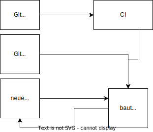
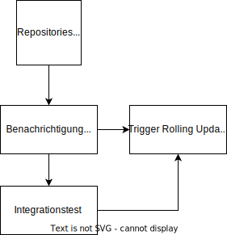

Die einzige Konstante im Leben ist Veränderung
Heraklit
Container Sicherheit
Welche Bibliothek läuft denn da?
Created by lrupp & darix and powered by reveal.js
CC BY-ND 3.0
Wer sind wir?
Lars Vogdt & Marcus Rückert
Seit über 18 Jahren bei der SUSE als Entwickler damit beschäftigt Distributionen zu bauen und die Infrastruktur dafür zu betreiben.
Containers are fun ...
- Wir können einfach und schnell viele Workloads deployen
- Brauchen weniger Systemresourcen als komplette virtuelle Maschinen (oder reale Hardware)
- Läuft fast überall - sehr portabel
- DevOPS, DevOPS überall (Entwicklung, Testing & Produktion nutzt das gleiche Toolset)
- Upstream Container, selbst gebaute Container
- Skalierung - Microservices
Jeder Container eine eigene Application - wie ein eigener Server?
- Container: Ein eigenes System das Updates braucht
- Container-Umgebungen: Ein wilder Zoo an Systemen, die Updates brauchen!
Wie erkennen welche Container Updates brauchen?
- Für Upstream Container
- Ob Upstream wohl trackt welche Libraries Security Updates brauchen?
- Wie trackt ihr das für die selbstgebauten Container?
Never change a running system
Biggest Mistake in IT history
- Wir probieren Änderungen zu minimieren oder gar ganz zu vermeiden
- Vielerlei Gründe - meistens fehlendes/ verlorengeganges Wissen/ Dokumentation
Wie macht ihr eigentlich OS Updates für die Container?
"Na wir bauen und deployen doch eh regelmäßig neu. Da machen wir die mit."
"Und was ist mit dem Container da, der seit Monaten keine Änderungen im Git hatte?"
*Schweigen*
NeuVector
- Viele Features für Sicherheit in der Container Infrastruktur
- Unter anderem Scanning für fehlende Security Updates in Containern
Und dann?
- Was wenn es keinen neuen Container von Upstream gibt?
- Wir bauen manuell den Container neu?
Wollen wir das wirklich manuell machen?
Eigentlich lieben wir doch alle Automatisierung.
Deploy Early
Deploy Often
Macht Ihr das wirklich?
- Ja wir deployen mindestens täglich Updates automatisiert auf allen unseren Servern
- Noch öfters wäre auch kein Problem
Echt jetzt?
Ja!
Was ist ein Update Deployment
- Eine "Downtime" mit Ansage...
- ... und Vorbereitung
Wir haben doch HA für unsere wichtigen Services
- Wir schalten also regelmäßig um, damit wir sehen ob es geht.
- Schafft auch Vertrauen dass beim Ausrollen von Updates nicht gleich alles kaputt geht.
- Wo ist der Unterschied zum Deployment einer anderen Änderung (Config/ Code/ Update)?
Automatisierung der Container Pipeline
Jetzt geht es um den Open Build Service aka OBS
Was kann der OBS?
- Native Pakete (RPM, Deb, Arch, Flatpak, AppImage)
- Native Paket-Repositories (supports: dnf, zypper, yum, apt, pacman, flatpak, ...)
- Images (für Hardware oder VMs) - SimpleImage, KIWI, mkosi
- Container (via KIWI oder Dockerfile)
- Container Registry
Wie baut der OBS Container?
- Wie üblich bauen Container aufeinander auf: auch in OBS gibt es Basis-Container
- Dazu kommen dann weitere Pakete und Konfigurationsdetails
- Ein KIWI oder Dockerfile enthält am Ende die fertige Bauanleitung
Wie kann OBS uns bei unserem Update-Problem helfen?
- OBS weiss wo welches Paket benutzt wird
- Jede Änderung eines Pakets baut auch darauf aufbauende Sachen neu
- Das gilt auch für Updates von der Basisdistribution
Reproduzierbarkeit
- Alle Builds laufen in einer reproduzierbaren Umgebung
- Kein Netzwerkzugang während des Builds
- Die Sourcen werden dem Build lokal zur Verfügung gestellt
- Die Reproduzierbarkeit betrifft auch die Build Umgebung selbst
- Folge: OBS speichert Sourcen normalerweise selbst
Aber wir haben doch schon git
- Kein Problem
- OBS kann Integration via Webhooks
- Sogar für mehrere Branches parallel via Workflows
- Source Services können auch Go/ Cargo/ NodeJS Module ziehen zum bauen
- Wenn gewünscht, cached OBS die Sourcen nur - allerdings kann ein Backup eigentlich nie schaden
OBS SCM Integration - grafisch
Follow the white rabbit
- OBS kann Eventbenachrichtungen via AMQP
- Polling vermeiden
- Beispiele auf rabbit.opensuse.org
- Dokumentation
- openQA (Integrationstest für unsere Distributionen)
OBS RabbitMQ Messagebus
Publish Event pro Container
Auf der Roadmap
Erleichtert Integration mit zb Kubernetes
Lasst uns mal träumen
- Distribution veröffentlicht Security Update
- OBS baut eventuell Pakete neu
- OBS baut Container neu
- Push auf die im OBS eingebaute Container Registry
- AMQP Event
- Optional Integrationstest
- Rolling Update im Kubernetes
Demo Time
Drückt uns die Daumen dass alles geht.
Für den Fall der Fälle
...oder einfach für später:
- Das OBS Repository für den Workshop
- Ein einfaches Github Projekt
- Das Paket zum Github Projekt - via Source Service wird hier automatisch die aktuellste GIT Version gezogen.
- Dockerfile in Github
- Passender Container in OBS
- Container mit eigenem Dockerfile in OBS
- Stacked Container - hängt vom oberen Container ab - und hat weitere Features
Wo bekomme ich mehr Information?
Thank you for your time
Happy rebuilding all the things.
Created by lrupp & darix and powered by reveal.js
CC BY-ND 3.0